RSVP and Wedding Invitation Plugin
Created: 20/May/2013
By: CraftedPixels Team [craftedpixels.net]
Email: craftedpixels.net@gmail.com
Thank you for purchasing our plugin. If you have any questions that are beyond the scope of this help file, please use the Support forum.
About
RSVP and Wedding Invitation Plugin allows you to send email wedding invitations and allow your guests to RSVP online on your WordPress site.
Features:
- Fully administrable guest list, add/edit/delete and sort your guests;
- Statistics per menu types (standard/kids/vegetarian);
- Statistics per RSVP status (Yes/No/Pending);
- Wedding invitation - Invite your guests to attend your wedding with our beautiful and customizable email invitation;
- Send invites to multiple guests at the same time;
- Customize the text on the invitation and send different invitations to different people;
- Add the RSVP form to any page as Wordpress shortcode;
- Email matching check on RSVP form, so only the people you invited can RSVP;
- Non-intrusive css style for RSVP form, it will keep the look and feel of your theme.
Installing and setup
- STEP 1: For this step you have two options:
- Option 1: Upload via FTP the "rsvp-wedding-invitation" folder from the archive to wp-content/plugins directory.
- Option 2: Use the "Add New" function from WordPress Dashboard.
The function is located in Plugins > Add New and click "Upload Plugin".
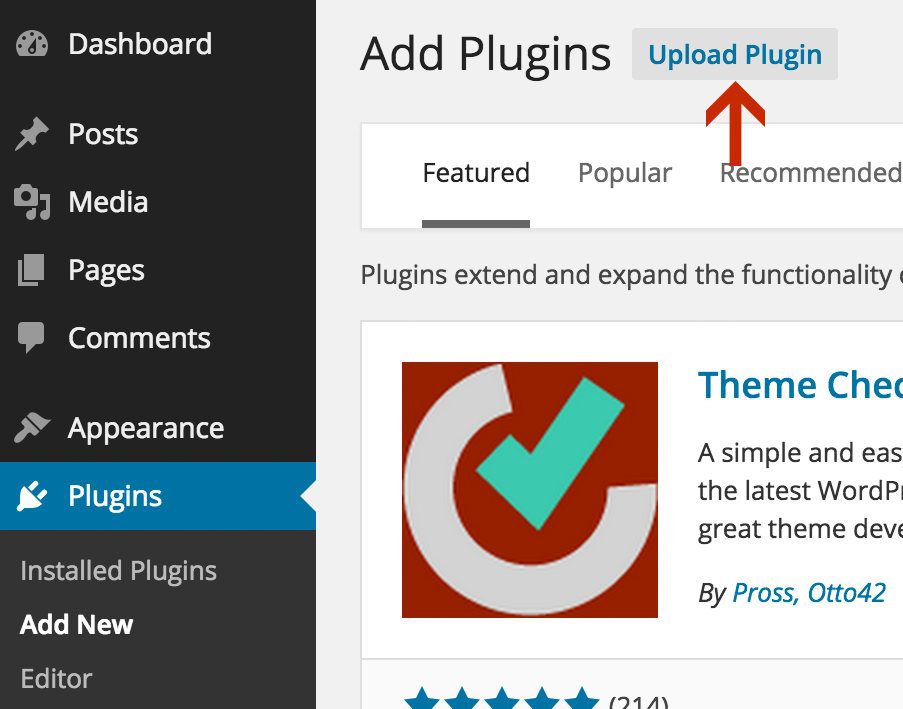
Browse for rsvp-wedding-invitation.zip and them click "Install Now".
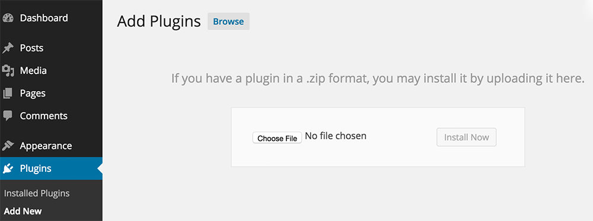
-
STEP 2: After that, you must activate the plugin. (Go to "Plugins" and click "Activate" RSVP and Wedding Invitation).
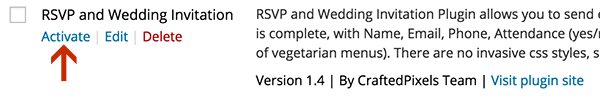 - STEP 3: To place the RSVP form on your site, create a new Page (Go to "Pages" and click "Add new") and put the [rsvp] shortcode in your page content and click Publish.
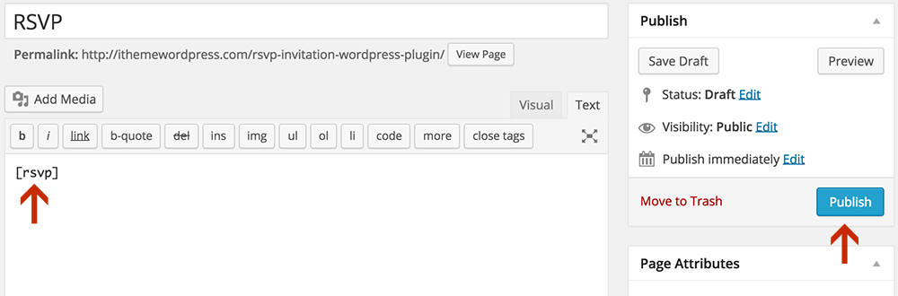
Updates
- V 1.4 [23 Jan 2015]
Improved invitation design
Updated documentation with instructions and screenshots for WordPress 4. - V 1.3 [01 Nov 2013]
Added textarea message field. - V 1.2 [30 Aug 2013]
Modified classes names to avoid error due to naming conflicts with other plugins or themes. - V 1.1 [5 June 2013]
Added "Disable email validation"/captcha option to RSVP form. - V 1.0 [22 May 2013]
Initial release.
RSVP & Wedding Invitations
To add the RSVP form on a page, use the [rsvp] shortcode.
To send email invitations and check who completed RSVP go to Plugins > RSVP.
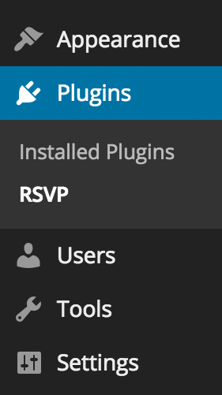The guest list will be empty. To add a guest, click "Add guest" button.
This is how a table with added guests will look ↓
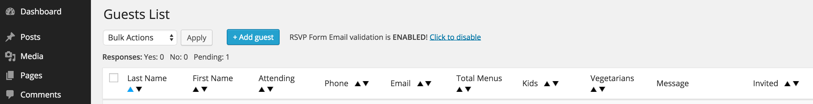-
Statistics: On top of the page, you will see some statistics:
-
Confirmed menus (Total/Kids/Vegetarian) which is the sum of each type of menus required by each guest that RSVPed Yes.
Total is the total number of persons that will be attending, including kids/vegetarians
Example: One guest RSVPed with total menus 4, kids 2 and vegetarian 1, this means that they will need 4 menus: 2 kids menus, 1 vegetarian menu and 1 standard - Responses (Yes/No/Pending) which is the number of people that RSVPed Yes/No and the number of people that did not respond yet.
-
Confirmed menus (Total/Kids/Vegetarian) which is the sum of each type of menus required by each guest that RSVPed Yes.
- To add a guest, click "Add guest" button, fill in the fields (all fields but the number of menus are required) and click Save.
- To edit a guest's information, click on his/hers name.
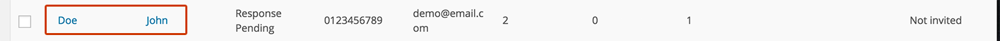
The edit form will appear. Fill in the fields (all fields but the number of menus are required) and click Save. -
To delete one or multiple guests, check the boxes before each person you want to delete, and select "Delete" from the "Bulk Actions" drop down menu. Then click Apply. You will be asked to confirm this action before it is completed.
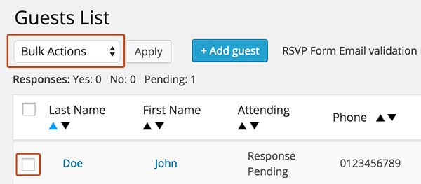 - To order guests alphabetically by name or by any other column entry, click the up/down arrows next to the respective column.
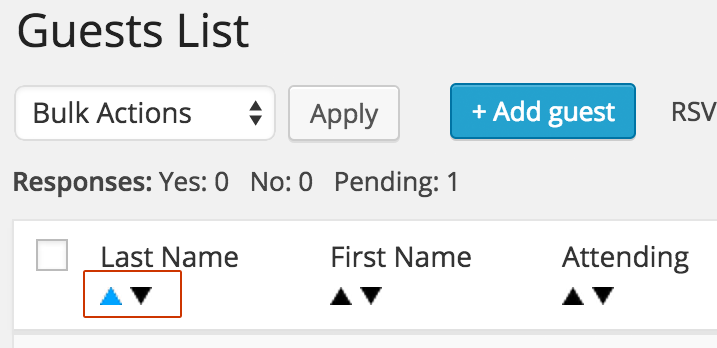 - If you prefer not to have to add your guests in the guest list: By default the rsvp form validates the email of the person who rsvp's. If a person who rsvp's is not on your guest list, he/she will not be able to complete the rsvp and will be notified that he/she is not on the guest list. If you prefer not to have to add your guests in the guest list, click "Click to disable" link.
With validation disabled, anybody can rsvp without being previously added to the guest list. Those who rsvp will be displayed just the same in the guest list table. Also, when validation is disabled, a captcha will show in the rsvp form, to prevent spam.
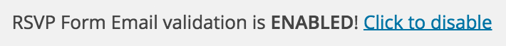 - To send wedding invitations, check the boxes before each person you want to invite,
and select "Send invitation" from the "Bulk Actions" drop down menu. Then click Apply. You will be asked to confirm this action before you continue.
Then you will be prompted to add the invitation text (which will appear on the wedding invitation email).
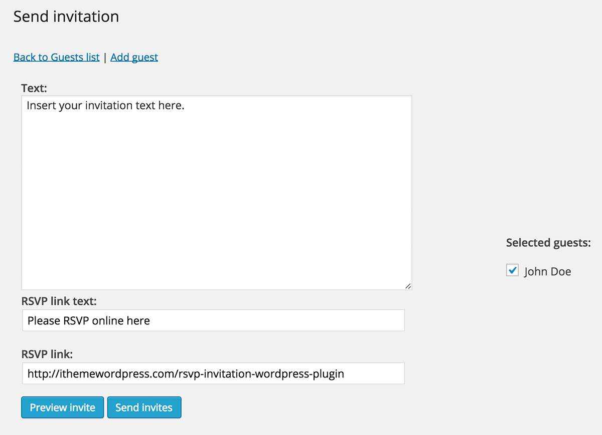
The RSVP link text is the text that will appear on the RSVP button underneath the invitation text in the email. (see the preview bellow)
When the person invited will click on this button it will open the link specified as RSVP link. This should be the link to the RSVP page you created.
You can preview the email before sending by clicking the Preview invite button or send the invitation email by clicking Send invites.
The wedding invitation will look like this:Please note that "Receiver's name here" is automatically replaced with the recipient's name, and that the "Please RSVP online here" button will have the text and link you provided.
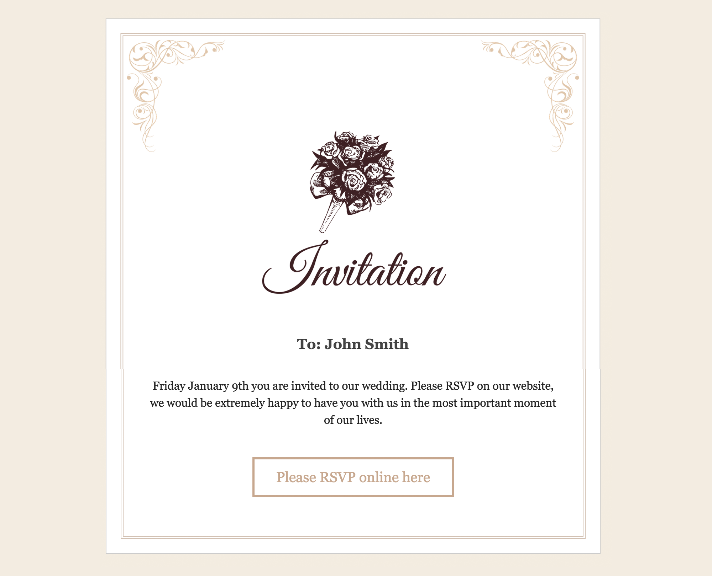 -
RSVP Page: When the invited guests open the link in the email, they will see the RSVP form. (see Installing Step 3.)
This form will required them to enter their First/Last Name, Phone number, Email address and choose between "I Will Attend" and "Sorry, I will no be able to attend".
If they choose "I Will Attend", they are prompted to fill in the Number of Persons attending (which is required), and the Number of Kids menus and Number of Vegetarian menus (if needed).
Then they can click "Complete RSVP" to send their RSPV.
They will only be able to RSVP if the email address they submit matches the one you added in the Admin page. (this is the email where they received their invite)
You can check the WP Admin page on your site to see the RSVP status for each guest and general statistics.